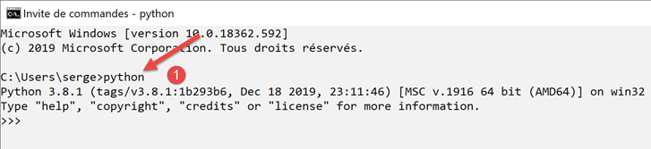
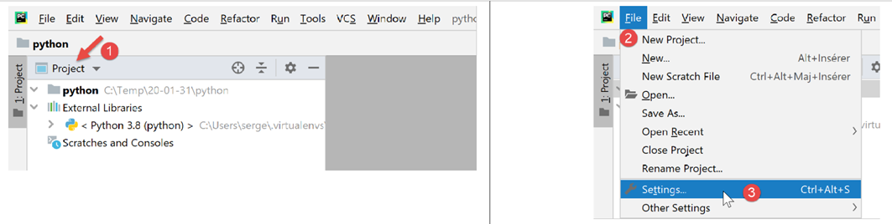
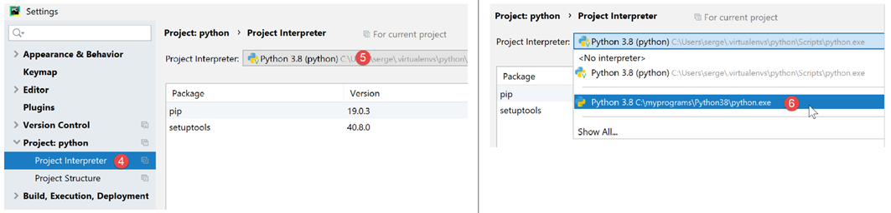
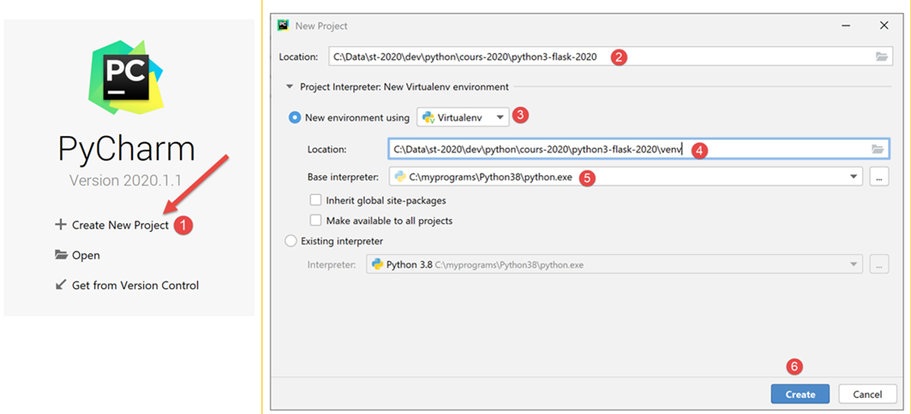
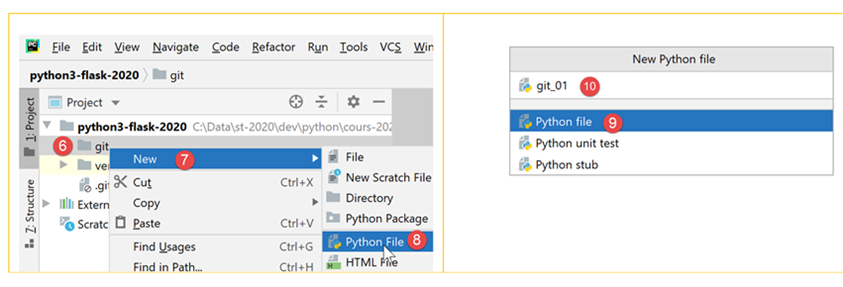
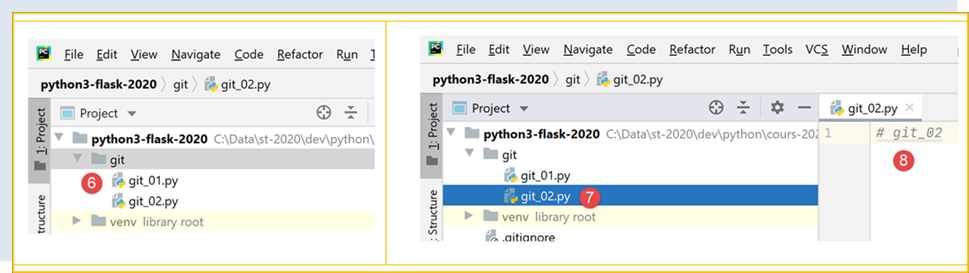
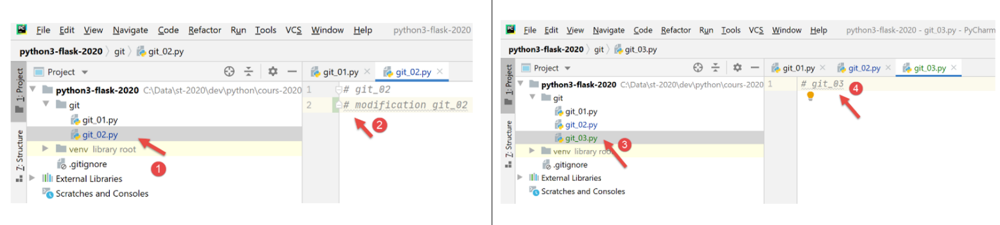

2. 搭建开发环境
2.1. Python 3.8.1
本文中的示例已在 Windows 10 系统上，使用可从 |https://www.python.org/downloads/|（2020 年 2 月）获取的 Python 3.8.1 解释器进行了测试：

安装 Python 后，会在文件目录中创建 [1] 文件夹，并在“程序”列表中生成 [2] 菜单项：

- [3-4]：两个交互式 Python 解释器；
- [5]：Python 文档；
- [6]：Python 模块文档；
我们不会使用交互式 Python 解释器。但需要知道的是，本文档中的脚本可以使用该解释器运行。虽然它对于测试 Python 功能的工作原理很有用，但对于需要重复使用的脚本来说并不太实用。以下是一个使用上述选项 [4] 的示例：

>>> 提示符允许您输入 Python 语句并立即执行。上面输入的代码含义如下：
行数：
- 1: 变量的初始化。在 Python 中，无需声明变量的类型。变量会自动采用其赋值的类型。该类型可能会随时间变化；
- 2: 显示名称。'name=%s' 是一种显示格式，其中 %s 是表示字符串的形式参数。name 是将代替 %s 显示的实际参数；
- 3: 显示结果；
- 4: 显示变量 name 的类型；
- 5: 此处的变量 name 属于 class 类型。在 Python 2.7 中，其值应为 <type 'str'>；
现在，让我们打开一个 Windows 命令提示符：

我们在 [1] 中能够输入 [python] 且可执行文件 [python.exe] 被成功找到，这表明它位于 Windows 机器的 PATH 环境变量中。这一点很重要，因为这意味着 Python 开发工具将能够找到 Python 解释器。我们可以按以下方式进行验证：

- 在 [2] 中，我们退出 Python 解释器；
- 在 [3] 中，执行显示 Windows 机器上可执行文件 PATH 的命令；
- 在 [4] 中，我们可以看到 Python 3.8 解释器的文件夹已被添加到 PATH 环境变量中；
2.2. PyCharm Community 集成开发环境
2.2.1. 简介
为了构建和运行本文中的脚本，我们使用了 [PyCharm] Community Edition 编辑器，该版本（截至 2020 年 2 月）可通过以下网址获取：|https://www.jetbrains.com/fr-fr/pycharm/download/#section=windows|：

下载 PyCharm Community IDE [1-3] 并进行安装。
启动 PyCharm IDE 并创建您的第一个 Python 项目：


- 在 [2-4] 中，创建一个新项目；
PyCharm IDE 将显示已创建的项目如下：

- 在 [2-3] 中，让我们查看 IDE 的属性；

- 在 [4] 中，将用于该项目的 Python 解释器；
- 在 [5] 中，可用的解释器下拉列表；
- 在 [6] 中，选择在 |Python 3.8.1| 部分下载的解释器；

- 在 [7] 中，显示所选的解释器；
- 在 [8] 中，显示该解释器可用的包列表。包包含 Python 脚本可使用的模块。目前有数百个模块可用；
首先，我们创建一个文件夹，用于存放我们的第一个 Python 脚本：

- 右键单击项目，然后按 [1-2] 创建文件夹；
- 在 [3] 中输入文件夹名称：该文件夹将创建在项目文件夹内；
接下来，让我们创建一个 Python 脚本：

- 右键单击 [bases] 文件夹，然后选择 [1-3]；
- 在 [4-5] 中，输入脚本名称；
让我们编写第一个脚本：

- 在 [3] 中，我们编写以下脚本：
- 第 1 行、第 3 行：注释以 # 符号开头；
- 第 2 行：变量的初始化。Python 不需要声明变量的类型；
- 第 4 行：屏幕输出。此处使用的语法为 [格式 % 数据]，其中：
- 格式：name=%s，其中 %s 表示字符串的占位符。该字符串将出现在表达式的 [data] 部分；
- data：变量 [name] 的值将替换格式字符串中的 %s 占位符；
- 通过[4-5]，我们根据 Python 管理机构的建议对代码进行了格式调整；
右键单击代码即可执行该脚本 [6]：

- 在 [7] 中，显示已执行的命令；
- 在 [8] 中，显示执行结果；
要在文档中运行该脚本，请从 URL |https://tahe.developpez.com/tutoriels-cours/python-flask-2020/documents/python-flask-2020.rar| 下载代码，然后在 PyCharm 中按以下步骤操作：

- 在 [1-2] 中，打开现有项目：选择包含已下载代码的文件夹；
- 在 [3] 中，项目已打开；
- 在 [4-5] 中，运行该项目中的某个脚本；

- 在 [7-8] 中，显示执行结果；
2.2.2. 虚拟执行环境
我们的工作环境现已准备就绪。不过，我们将对其进行修改，以便编写本课程所需的脚本。首先，让我们修改 PyCharm 的配置：

在右侧窗口中：
- 默认情况下，[1] 选项已勾选。取消勾选该选项，这样 PyCharm 就不会默认打开上一个项目，而是让我们自行选择要打开的项目；
- 在 [2] 处，关闭应用程序窗口时不确认退出 PyCharm；
- 在 [3] 处，新项目将在单独的窗口中打开；
- 在 [4] 处，如果在程序运行时关闭 PyCharm，该程序将被停止；
现在让我们关闭 PyCharm，然后重新打开它：

- 在 [1] 中，创建一个新项目；
- 在 [2] 中，指定项目文件夹；
- 在 [3] 中，选择一个虚拟环境。虚拟环境是专属于您正在创建的项目，不会与其他项目的虚拟环境混用。Python/Flask 项目会使用许多必须安装的外部库。项目 P1 可能使用库 B 的 v1 版本，而项目 P2 可能使用相同的库 B 但为 v2 版本。这两个版本可能或多或少兼容。 然而，当您安装 v2 版本的库时，如果 v1 版本已存在，v1 版本会被 v2 版本覆盖。如果新版本 v2 与 v1 版本不完全兼容，这可能会给原本使用 v1 版本的项目带来问题。为避免此类问题，每个项目都应隔离在独立的虚拟环境中；
- 在 [4] 中，指定项目运行期间下载的 Python 库的存储路径。此处我们选择在项目文件夹内创建一个 [venv]（虚拟环境）文件夹。此操作并非强制要求；
- 在 [5] 中，选择项目的 Python 解释器。即我们在上一步骤中安装的那个；
- 在 [6] 中，创建项目；

- 在 [7-8] 中，显示已创建的项目；
- 在 [9] 中，项目的运行时环境，即虚拟环境；
- 在 [10] 中，[site-packages] 文件夹是后续下载的库文件将存储的位置；
2.2.3. Git
接下来，我们将启用版本控制系统。这里我们将使用 Git [1-4]：

版本控制系统（VCS）允许您跟踪项目的变更。 您可以通过称为“提交”（commit）的操作，在项目生命周期的不同阶段对其进行快照。如果您在时间点 T 和 T+1 分别进行两次提交，VCS 便能让您查看这两个已提交版本之间的差异。通常，VCS 由开发团队共同使用。开发人员在代码经过彻底测试后进行提交。其他开发人员可以从 VCS 中检出这经过验证的代码并加以使用。
在此场景中，仅有一名开发者。经验表明，应用程序在时间点 T 可能正常运行，但在时间点 T+1 却可能无法运行。这种情况下，我们希望回退到时间点 T 重新开始。版本控制系统支持这种操作，因此我们将在此使用它。
我们将向您展示如何使用 Git 实现这一操作。

- 在 [1] 中，选择 [Git] 选项卡（左下角）；
- 在 [2] 中，您可以看到有 495 个项目文件未被 Git 版本控制。这意味着在提交时，这些文件将不会被包含在项目快照中；
- 在 [3] 处，点击 [提交] 按钮或项目验证按钮。如前所述，Git 随后会为项目生成一个快照，并将其存储在项目根目录下的 [.git] 文件夹中（PyCharm 不会显示该文件夹，但在 Windows 资源管理器中可见）；
让我们将项目当前状态提交[3]。
- 在 [4] 中，未版本控制的文件列表；
- 在[5]中，所有这些未版本化的文件都属于虚拟环境[venv]；
- 在 [6] 中，每次提交都必须附带一条提交信息。在此，开发者会描述待提交版本与上次提交版本相比所引入的变更；
Git 可以忽略某些文件夹或文件。这些文件随后将永远不会被包含在快照中。在上述 [5] 中，右键单击 [venv] 文件夹。
- 在[1-3]中，我们指定[venv]文件夹不应包含在Git的快照中。Git忽略的文件夹和文件列表存储在一个名为[.gitignore]的文件中[4]；


- 完成上一步操作后，[venv] 文件夹中的所有文件都会从未版本化的文件列表中消失。仅保留刚刚创建的 [.gitignore] 文件；
- 在 [5] 中，我们选中该文件以便将其保存；
- 在 [6] 中，我们编写提交信息：
- 在 [7] 中，我们确认。随后将生成该项目的快照；

- 在 [8-9] 中，[.gitignore] 文件的内容：仅有一行，包含 [/venv] 文件夹的名称，这表示在快照中应忽略该文件夹的内容；
现在让我们看看 Git 如何派上用场。首先，我们创建一个 [git] 文件夹（您可以使用任何其他名称——演示结束后可以将其删除）：

- 在 [1-5] 中，我们创建了一个 [git] 文件夹；

- 在 [6-10] 中，我们创建一个 Python 脚本 [git_01]；

- 在 [11-12] 中，该脚本仅包含一条注释；
- 在 [13-14] 中，创建 [git_01] 的副本。操作步骤如下：选中 [git_01]，按 Ctrl-C（复制），然后按 Ctrl-V（粘贴），并将文件名输入为 [git_02]；

现在，让我们提交项目。系统将对两个文件 [git_01] 和 [git_02] 进行快照；

- 在 [1-3] 中，提交项目；
- 在 [4] 中，选择要提交的未版本化文件——本例中为所有文件；
- 在 [5] 处，输入提交信息；
- 在 [6] 处，我们确认；

- 在 [1-2] 中，确认提交；
- 在 [3] 中，选择 [日志] 选项卡；
- 在 [4] 中，显示项目分支视图。这里只有一个名为 [master] 的分支；
- 在 [5-6] 中，显示刚刚完成的提交；
现在，让我们以同样的方式创建一个名为 [git_03] 的脚本：

修改 [git_02] 脚本并删除 [git_01] 脚本：

然后提交新版本：

现在日志中显示了两个提交：

当您选择某个特定提交时，该项目的文件树会显示在其右侧：

现在假设最后一次提交导致我们陷入了死胡同，我们希望回退到与之前某次提交对应的状态：

- 在 [1-2] 中，选择你要回退到的提交；
- 在 [3-5] 中，有几种重置模式。我们选择 [hard] 模式，该模式将回退到所选状态，同时丢弃此后所做的更改；

- 在 [6] 中，我们已恢复了此前被删除的 [git_01]；
- 在 [7-8] 中，我们发现 [git_01] 已恢复到原始状态，不再包含此前所做的修改；
现在，让我们修改 [git_02] 并添加 [git_03] [1-4]：

现在，让我们重复回滚到初始提交的过程：

- 在 [1-4] 中，我们将回退到提交 #1 的快照；
- 在 [5-6] 中，我们选择 [保留] 选项而非 [硬回退]。这些选项不易理解，因此我们需要亲自尝试一下：
 |  |
- 在 [1] 中，文件 [git_03] 仍然存在；
- 在 [2-3] 中，[git_02] 文件保留了其更改；
很难说这个 [Revert Commit] 到底做了什么。现在让我们提交当前状态：

- 在 [1-6] 中，该提交；

- 在 [9] 中，我们可以看到新的提交；
现在，让我们试着像之前那样回到提交 1：
 |  |
- 在 [1-6] 中，我们以 [Hard] 模式回滚到提交 #1；

- 在 [7-8] 中，这次我们确实丢失了自首次提交以来所做的所有更改；
从这里开始，我们将不再回顾 [Git]。读者可以按以下步骤继续：
- 读者可以按照提供的示例操作，既可以手动输入代码，也可以从课程网站下载；
- 每当示例运行成功时，他们可以提交项目；
- 在编写自己的代码时若遇到瓶颈，他们知道可以通过回滚到之前的提交来恢复到稳定状态；
2.3. Python 编码规范
即使不遵循编码规范，您编写的 Python 代码依然可以运行。但这可能不会受到 Python 社区的认可，因为该社区已制定了相应的编码规范。这些规范总结在 |https://stackoverflow.com/questions/159720/what-is-the-naming-convention-in-python-for-variable-and-function-names| 上的文章中：

- 模块名称（module_name）遵循一种有时被称为 [snake_case] 的约定：全部小写，必要时用下划线分隔单词。这种 [snake_case] 约定适用于方法、包、变量和函数的名称；
- 类的名称（ClassName）遵循一种有时被称为 [PascalCase] 的约定：由单词序列组成，每个单词的首字母大写；
- 常量名称遵循 [SNAKE_CASE] 约定：由大写单词组成，单词之间用下划线分隔；
本文档中通常遵循这些约定。然而，对于定义类的模块，我将其命名为与所包含类相同的名称。因此，它遵循 [PascalCase] 约定而非 [snake_case]。这样做是为了能够快速识别类模块。